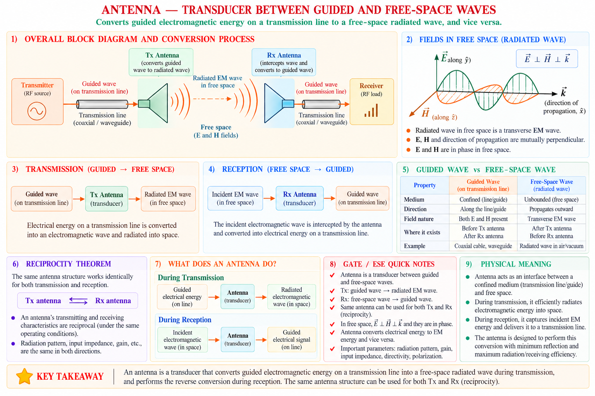
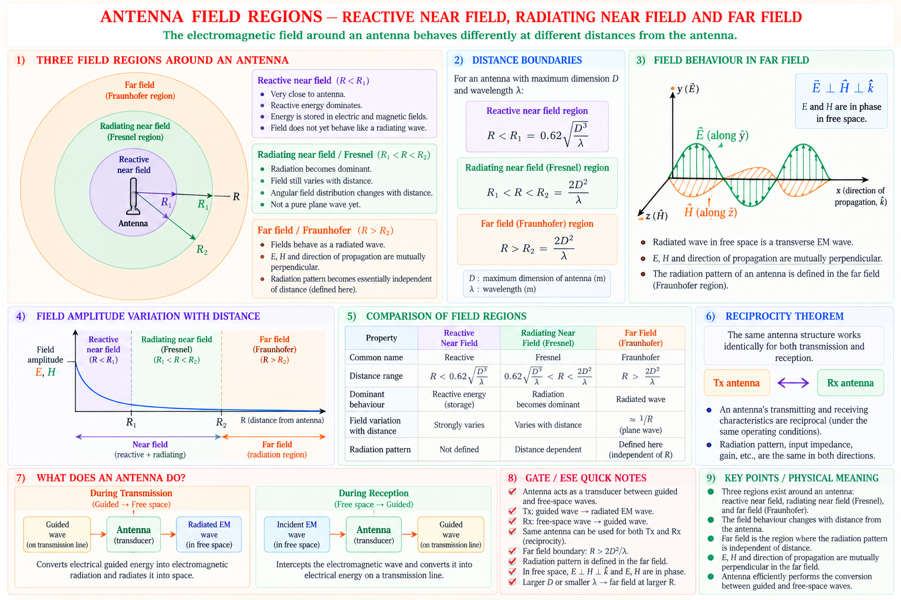
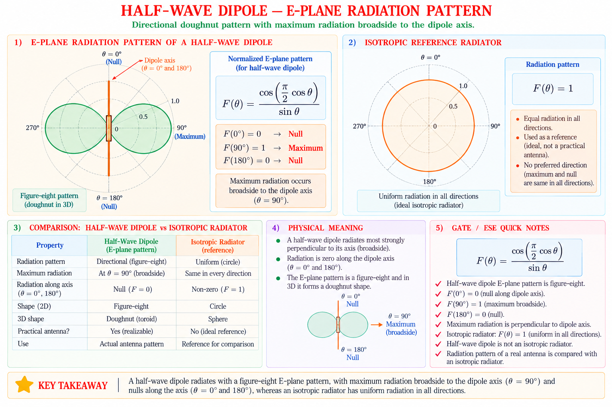
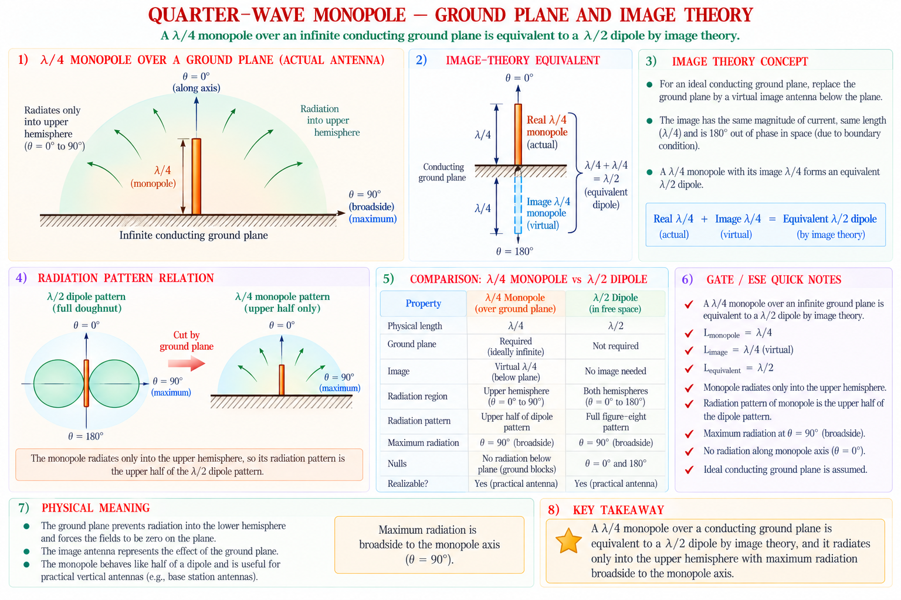
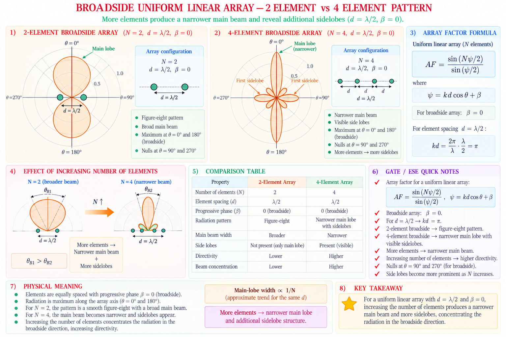
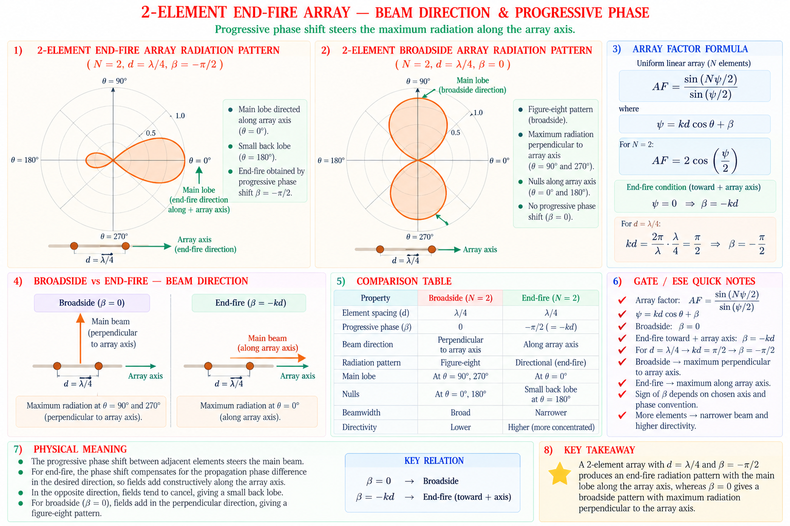

Radiation pattern, gain, directivity, efficiency and beamwidth; the half-wave dipole and quarter-wave monopole; and linear antenna arrays — broadside, end-fire and the array factor — with complete derivations and GATE / IES exam focus. Final chapter of the series.
Every communication system eventually needs to cross open space without wires — a mobile phone talking to a tower, a satellite beaming TV to your dish, a radar pulse bouncing off an aircraft. The device that performs this conversion between a guided electrical signal travelling on a wire or transmission line and a free-space electromagnetic wave is the antenna. It is, in the cleanest sense, a transducer: on transmission it converts guided-wave energy into radiated energy; on reception it does the reverse.
An antenna does not "create" radiation out of nothing — it is simply a structure shaped so that time-varying currents on it produce fields that do not fully cancel at large distances. A straight piece of wire carrying a steady DC current radiates nothing; the same wire carrying a high-frequency alternating current radiates efficiently. Radiation is a consequence of accelerating charge, and an AC current is charge under constant acceleration.

The radiation pattern is a graphical representation of the radiation properties of an antenna as a function of space coordinates, typically plotted at a fixed (far-field) distance and a fixed frequency. It tells you, for every direction (θ, φ) around the antenna, how strong the radiated field or power is relative to the strongest direction.
Radiation patterns are only meaningful in the far field (Fraunhofer region), where the angular field distribution is essentially independent of distance. The boundary is conventionally taken at \(R \geq \dfrac{2D^2}{\lambda}\), where D is the largest dimension of the antenna and λ is the wavelength.
An isotropic radiator is a hypothetical, lossless antenna that radiates equally in all directions — a perfect sphere in 3-D. It does not exist physically (an antenna cannot radiate uniformly in every direction including along its own conductor axis), but it is indispensable as the reference against which every real antenna's gain and directivity are measured.

Students often confuse the far-field boundary distance with the antenna's physical size. Remember: the far-field distance \(R_{ff} = 2D^2/\lambda\) grows with the square of antenna size — a large reflector dish needs measurement distances of kilometres, while a small dipole's far field begins within a few wavelengths.
Directivity and gain are the two most important "single-number" descriptors of how well an antenna concentrates power in a particular direction. They are often confused, but the distinction is precise: directivity is a purely geometric statement about the shape of the radiation pattern, while gain additionally folds in the antenna's ohmic losses. Directivity is the idealised, loss-free figure; gain is the practical figure of merit that a real receiver or radar designer actually cares about.
Directivity D(θ,φ) is the ratio of the radiation intensity in a given direction to the radiation intensity averaged over all directions (i.e. the radiation intensity of an isotropic source radiating the same total power).
Here U(θ,φ) is the radiation intensity (power per unit solid angle) in the direction of interest, and P_rad is the total power radiated by the antenna. The maximum directivity D₀ (often simply called "the directivity") uses U_max in place of U(θ,φ):
where Ω_A is the beam solid angle — the solid angle through which all the power would flow if the radiation intensity were constant at U_max over that solid angle and zero elsewhere. A highly directive antenna has a small Ω_A and hence a large D₀.
Directivity is a zero-sum game. An antenna cannot increase radiation in one direction without decreasing it somewhere else, because the total radiated power is fixed. A pencil-beam satellite dish achieves enormous directivity precisely by giving up radiation in all the directions a dipole would normally cover.
Gain G(θ,φ) replaces the radiated power P_rad in the directivity definition with the total input power P_in accepted by the antenna terminals. Since P_in ≥ P_rad (some power is always lost as heat in the conductors and dielectrics), gain is always ≤ directivity.
where e_cd is the antenna radiation efficiency (conduction + dielectric efficiency), defined as P_rad/P_in. For a lossless antenna, e_cd = 1 and gain equals directivity exactly.
| Quantity | Depends on | Typical GATE Trap |
|---|---|---|
| Directivity D | Pattern shape only (lossless idealisation) | D is always quoted relative to isotropic unless stated otherwise |
| Gain G | Pattern shape and ohmic/dielectric losses | "Gain" in dB is usually dBi (relative to isotropic), not dBd unless specified |
| Realised Gain | Gain and impedance mismatch loss at the feed | Rarely asked numerically, but tests conceptual understanding of "3 efficiencies" |
The half-wave dipole has a calculated maximum directivity of D₀ = 1.643, almost universally quoted in decibels:
This number, 2.15 dBi, is so frequently used as a reference that gain is sometimes quoted in dBd (decibels relative to a half-wave dipole) instead of dBi. The conversion is simple: dBi = dBd + 2.15.
"Dipole gets a 2.15 dB head start over isotropic." Whenever a problem gives gain in dBd, immediately add 2.15 to convert to dBi before comparing with isotropic-referenced quantities like EIRP.
Every real antenna has finite conductor resistance and may use lossy dielectric supports. The total input power therefore splits between power that is actually radiated and power dissipated as heat:
where R_r is the radiation resistance (the equivalent resistance that would dissipate the same power as is actually radiated) and R_L is the loss resistance of the antenna structure itself. A short, electrically small antenna typically has a very small R_r, making efficiency drop sharply — this is precisely why AM broadcast antennas (very long wavelength) need massive radiating structures or carefully engineered ground systems.
What happens if R_L → 0? Efficiency e_cd → 1, and gain → directivity. This is the idealised, lossless-antenna assumption used throughout most introductory derivations and in nearly every GATE numerical unless stated otherwise.
Beamwidth quantifies how "wide" the main lobe is, and trades off directly against directivity — a narrower beam concentrates more power and gives higher directivity.
The Kraus formula shows directivity and beamwidth are inversely related: halving both HPBW values (in each plane) roughly quadruples directivity. This single relationship explains why phased-array radars chase narrower beams — every degree of beamwidth reduction pays back substantially in directivity (and hence range).
The half-wave dipole (length L = λ/2) is the single most important practical antenna in all of electromagnetics — it is simple to build, has a real, near-50 Ω input impedance close to resonance, and serves as the universal gain reference (dBd). It is fed at its centre and the current distribution along its length is very closely sinusoidal.
For a thin, centre-fed dipole of length L, the assumed sinusoidal current distribution is:
Carrying this through the standard radiation-integral derivation (integrating the vector potential contribution from every current element along the wire) gives the normalised far-field pattern of a dipole of general length L:
For the special, exam-favourite case of L = λ/2, kL/2 = π/2, and since cos(π/2) = 0, the formula collapses beautifully to:
Here θ is measured from the dipole's own axis. This pattern is independent of the azimuthal angle φ (the dipole is rotationally symmetric about its axis), which is why a single 2-D plot — usually called the E-plane pattern — fully captures the 3-D shape (a doughnut / figure-of-eight of revolution).

What if θ → 0 (along the wire axis)? Both numerator and denominator → 0; by L'Hôpital's rule, F(θ) → 0. Physically: there is no broadside current component to radiate along the wire's own axis. This null along the dipole axis is exactly why dipoles are mounted vertically for omnidirectional horizontal coverage.
Physically, every infinitesimal current element along the dipole radiates like a tiny Hertzian dipole, with its own sin θ pattern. The total far field is the phased sum of contributions from every point along the sinusoidal current distribution. For L = λ/2, these contributions add constructively broadside (θ = 90°) and destructively along the axis, producing the slightly "squashed" figure-of-eight that is marginally narrower than a simple sin θ pattern (which would describe an infinitesimally short dipole).
Radiation resistance R_r is defined through power balance: the total power radiated by the antenna equals what would be dissipated in a fictitious resistor R_r carrying the same terminal (feed-point) current I₀:
Carrying out the radiated-power integral for the λ/2 dipole's exact current distribution (this involves the cosine integral function, Ci(x), and is one of the few standard derivations GATE expects you to recall the result of rather than re-derive from scratch) gives the celebrated number:
73 Ω is remarkably close to the characteristic impedance of standard coaxial cable variants and to twin-lead transmission lines historically used for TV/FM receiving antennas — which is precisely why the half-wave dipole became the default practical radiator: it is naturally close to a matched condition without needing extra matching networks.
The half-wave dipole's full input impedance (including a small reactive part because its physical length is not exactly resonant) is approximately:
The small inductive reactance (+j42.5 Ω) is why practical dipoles are built slightly shorter than λ/2 (typically 0.47λ–0.48λ) — this brings the reactance to zero for a true resonant, purely real input impedance.
| Antenna Type | Length | Radiation Resistance | Directivity D₀ |
|---|---|---|---|
| Infinitesimal (Hertzian) dipole | L ≪ λ | ~0.01–1 Ω (very low) | 1.5 (1.76 dBi) |
| Short dipole | L ≤ λ/10 | Low, ∝ (L/λ)² | ≈ 1.5 (1.76 dBi) |
| Half-wave dipole | L = λ/2 | ≈ 73 Ω | 1.643 (2.15 dBi) |
| Full-wave dipole | L = λ | ≈ 200 Ω | ≈ 2.41 (3.8 dBi) |
Radiation resistance for an electrically short dipole scales as (L/λ)² — halving the length quarters R_r, making such antennas inherently inefficient unless ohmic losses are reduced to match. Do not confuse this scaling with the half-wave dipole's near-constant 73 Ω, which arises from a completely different (non-quasi-static) regime.
A monopole is simply one half of a dipole — typically a quarter-wave (λ/4) vertical rod mounted above a conducting ground plane, fed between the base of the rod and the ground plane itself. It is the workhorse antenna of AM/FM broadcast towers, vehicle antennas, and many handheld radios.
The monopole's behaviour is most elegantly explained using image theory: a perfectly conducting infinite ground plane can be replaced (for the purpose of field calculation above the plane) by removing the ground plane entirely and adding a mirror-image current source below it. A λ/4 monopole above an infinite ground plane, fed with current I₀, behaves — in the region above the plane — exactly like a λ/2 dipole fed with the same current.

This "half the resistance, double the directivity" pairing is a direct consequence of confining the same radiated field pattern into half the solid angle. It is one of the most frequently tested conceptual relationships for monopole-vs-dipole questions.
Image theory strictly requires an infinite, perfectly conducting ground plane. Real ground planes (vehicle roofs, handset chassis, or a few radial ground wires at the base of a broadcast tower) are finite, which:
A single element — however well designed — has a directivity ceiling set by its physical size. To build genuinely high-gain, electronically steerable, or shaped-beam antennas (radar, base-station panels, satellite communication ground terminals), engineers combine multiple identical elements into an array and exploit constructive/destructive interference between their radiated fields.
Arrays give you something a single large antenna cannot: electronic control of the beam direction by simply adjusting the relative phase fed to each element — no mechanical rotation needed. This is the entire basis of phased-array radar and modern 5G massive-MIMO base stations.
For an array of N identical elements, the total far field is the product of two independent factors — this is the single most powerful simplification in array theory:
The element factor is simply the radiation pattern of a single element in isolation (e.g. the cos(π/2·cosθ)/sinθ pattern of a λ/2 dipole). The array factor depends purely on the geometric arrangement of the elements, their excitation amplitudes, and their relative phases — completely independent of what kind of element is used.
Consider N identical elements equally spaced by distance d along a line (say, the x-axis), each fed with equal amplitude but a progressive phase shift β between adjacent elements. The array factor, observed at azimuth angle φ from the array axis, is:
This geometric series sums in closed form to give the standard normalised array factor magnitude (peak value = 1):
where ψ is the total progressive phase difference between adjacent elements, combining the geometric phase difference (kd cos φ, from path-length differences) and the electrical phase difference β deliberately introduced at the feed.
Because β is purely an electrical (feed-network) quantity, it can be changed in real time with phase shifters — without moving a single physical element. This is exactly how a phased-array radar scans a wide angular sector electronically, far faster than any mechanically rotated dish could.
A broadside array directs its main beam perpendicular to the line of the array elements (φ = 90°). This requires all elements to be fed in phase (β = 0), so that the geometric path-length difference alone determines the array factor.
The standard spacing choice for a broadside array is d = λ/2. This value is not arbitrary — it is the largest spacing that avoids a second, unwanted "grating lobe" of full strength appearing elsewhere in visible space, while still giving useful beam narrowing.

If d > λ for a broadside array, additional full-strength "grating lobes" appear in visible space at other angles besides φ = 90°, because ψ can again pass through 0 (or a multiple of 2π) at those angles. This is undesirable in most applications and is why d = λ/2 is the standard safe choice for broadside arrays.
As N increases (more elements, same d = λ/2), HPBW narrows roughly as 1/N and directivity grows roughly proportional to N — this N-fold "array gain" on top of the element's own gain is the central economic argument for building large arrays rather than one giant single element.
An end-fire array directs its main beam along the line of the elements (φ = 0° or φ = 180°), rather than perpendicular to it. This requires a progressive phase shift β chosen specifically to make ψ = 0 at the endfire direction rather than broadside.
For the main beam to point exactly along φ = 0°, set ψ = 0 there:
This is the ordinary end-fire condition. A commonly tested variant is the Hansen–Woodyard end-fire condition, which slightly over-shifts the phase (β = −(kd + π/N) approximately) to squeeze out additional directivity at the cost of a less forgiving (narrower-bandwidth) design.

| Property | Broadside Array | End-Fire Array |
|---|---|---|
| Beam direction | ⊥ to array axis (φ = 90°) | Along array axis (φ = 0° / 180°) |
| Feed phase β | 0 (all elements in phase) | −kd (ordinary), or Hansen–Woodyard for max directivity |
| Typical spacing | λ/2 | λ/4 (ordinary end-fire) |
| Physical array length for given gain | Larger (broadside footprint) | Smaller (compact, in-line) |
| Typical use | Panel/base-station sector antennas | Yagi-Uda director chains, compact end-fire arrays |
"Broad-SIDE points to the side (perpendicular); end-fire fires off the end (along the line)." β = 0 means no extra phase trick is needed for broadside — the array's own geometry already favours the perpendicular direction.
(i) Convert dBi → dBd:
(ii) EIRP (Effective Isotropic Radiated Power):
EIRP is what an isotropic radiator would need to transmit to produce the same power density at the receiver as the actual directional antenna does in its peak direction. It is always expressed relative to isotropic, so always use the dBi figure (or the linear gain, not e_cd·D in dBd) when computing EIRP.
(i) Radiated power using P_rad = ½I₀²R_r:
(ii) RMS current and terminal voltage:
Cross-check using RMS power: \(P_{\text{rad}} = I_{\text{rms}}^2 \times R_r = (1.414)^2 \times 73 = 2 \times 73 = 146\text{ W} \quad \checkmark\) — matches part (i), confirming consistency.
Step 1 — Convert directivity to linear scale:
Step 2 — Apply efficiency:
Step 3 — Convert back to dB:
Alternatively (and faster for exam time pressure), work entirely in dB: since efficiency loss in dB = 10log₁₀(0.85) = −0.71 dB, the gain is simply 8 − 0.71 = 7.29 dBi — same answer, confirming the additive-in-dB shortcut.
Apply Kraus' formula (Θ₁, Θ₂ in degrees):
Convert to dB:
Kraus' formula is an approximation valid for antennas with a single, narrow, pencil-shaped main beam and low side lobes — it should not be applied to broad or multi-lobed patterns (e.g. a simple dipole), where it would give a wildly incorrect result.
Apply the ordinary end-fire condition β = −kd, with k = 2π/λ:
Verification — substituting back into ψ = kd cos φ + β at φ = 0°:
Answer: β = −144° (element 2 lags element 1 by 144°). This confirms the array factor is maximum (ψ = 0) exactly at φ = 0°, the desired end-fire direction.
The following topics consistently appear in GATE EC (Electromagnetics / Communication Systems sections) and IES ETE:
Statement: "The maximum directivity of a half-wave dipole antenna, relative to an isotropic radiator, is approximately…"
Explanation: D₀ = 1.64 (2.15 dBi) is the standard half-wave dipole result and should be memorised directly — it appears repeatedly as a reference value. Option (C), 3.28, is the directivity of the related λ/4 monopole (double the dipole's, by the ground-plane image argument), a frequently used distractor.
For a uniform linear array to radiate maximum power in the broadside direction (perpendicular to the array axis), the progressive phase shift β between adjacent elements must be:
Explanation: Broadside requires ψ = kd cos φ + β = 0 at φ = 90°. Since cos 90° = 0, this is automatically satisfied for any β only if β = 0 too — in general, the broadside condition is precisely β = 0, making every element radiate in phase toward the perpendicular direction. β = −kd (option B) is instead the ordinary end-fire condition.
A quarter-wave monopole is mounted over a perfectly conducting infinite ground plane and fed with the same terminal current as an equivalent half-wave dipole in free space. Compared to the dipole, the monopole's radiation resistance is:
Explanation: By image theory, the monopole's field pattern above the ground plane matches the dipole's upper-half pattern exactly, but the monopole radiates into only the upper hemisphere — half the total solid angle. For the same feed current, total radiated power halves, so R_r (defined via P_rad = ½I₀²R_r) also halves: ≈ 36.5 Ω.
For a uniform linear broadside array with fixed number of elements N, if the inter-element spacing d is increased from λ/2 toward λ, which of the following is correct?
Explanation: Larger spacing \(d\) means \(\psi = kd \cos\phi\) varies more rapidly with \(\phi\), which narrows the main lobe (smaller HPBW) — but it also makes it more likely that \(\psi\) passes through 0 (or a multiple of \(2\pi\)) again at some other physical angle, creating a full-strength grating lobe. This trade-off is why \(d = \lambda/2\) is the standard "safe" broadside spacing — it narrows the beam usefully without yet introducing grating lobes.
Directivity of \(\lambda/2\) dipole \(= 1.64\) (\(2.15\text{ dBi}\)) · Gain \(= D_0\) when lossless · Efficiency \(e_{\text{cd}} = \frac{R_r}{R_r + R_L}\) · Broadside \(\beta = 0\), end-fire \(\beta = -kd\). Recite "one-six-four-three, two-one-five" for \(D_0 = 1.643 \to 2.15\text{ dBi}\) whenever a question gives you the dipole as reference.
Have a question on radiation pattern, gain, directivity, dipole resistance, or array factor? Type below or pick a suggestion.
Defined only in the far field (\(R \ge \frac{2D^2}{\lambda}\)). Isotropic = reference only. Omnidirectional (dipole) vs directional (array, dish). Main lobe, side lobes, back lobe, nulls.
\(D_0 = \frac{4\pi U_{\text{max}}}{P_{\text{rad}}}\) (pattern only). \(G_0 = e_{\text{cd}} D_0\) (includes losses). \(\text{dBi} = \text{dBd} + 2.15\). Kraus: \(D_0 \approx \frac{41,253}{\Theta_1 \Theta_2}\) for pencil beams.
\(F(\theta) = \frac{\cos\left(\frac{\pi}{2}\cos\theta\right)}{\sin\theta}\). \(R_r \approx 73\,\Omega\). \(D_0 = 1.643\) (\(2.15\text{ dBi}\)). \(Z_{\text{in}} \approx 73+j42.5\,\Omega\). Practical length \(\approx 0.47\lambda\)–\(0.48\lambda\) for resonance.
\(\lambda/4\) over ground plane \(\equiv \lambda/2\) dipole by image theory. \(R_r \approx 36.5\,\Omega\) (half). \(D_0 \approx 3.286\) / \(5.16\text{ dBi}\) (double). Radiates upper hemisphere only.
\(\text{Pattern} = \text{Element Factor} \times \text{AF}\). \(\psi = kd \cos\phi + \beta\). \(|\text{AF}|_n = \frac{1}{N} \left|\frac{\sin(N\psi/2)}{\sin(\psi/2)}\right|\). \(d, \beta\) are the two design knobs.
Broadside: \(\beta=0\), beam \(\perp\) axis, \(d=\lambda/2\) typical. End-fire: \(\beta=-kd\), beam along axis, \(d=\lambda/4\) typical. Hansen–Woodyard over-shifts \(\beta\) for extra directivity.
This concludes the 13-chapter Aarova AI Communication Systems series — from baseband signals and modulation through to antennas and arrays. Revisit the table of contents in any chapter to jump between topics, and use the GATE/IES insight cards across all chapters as your final pre-exam revision pass.
All technical content is derived from the following standard textbooks and learning resources. All explanations, derivations, diagrams and examples are original to Aarova AI.